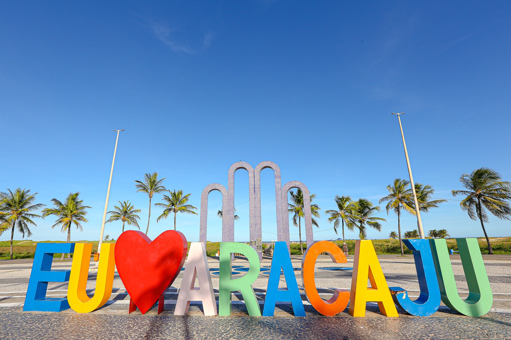
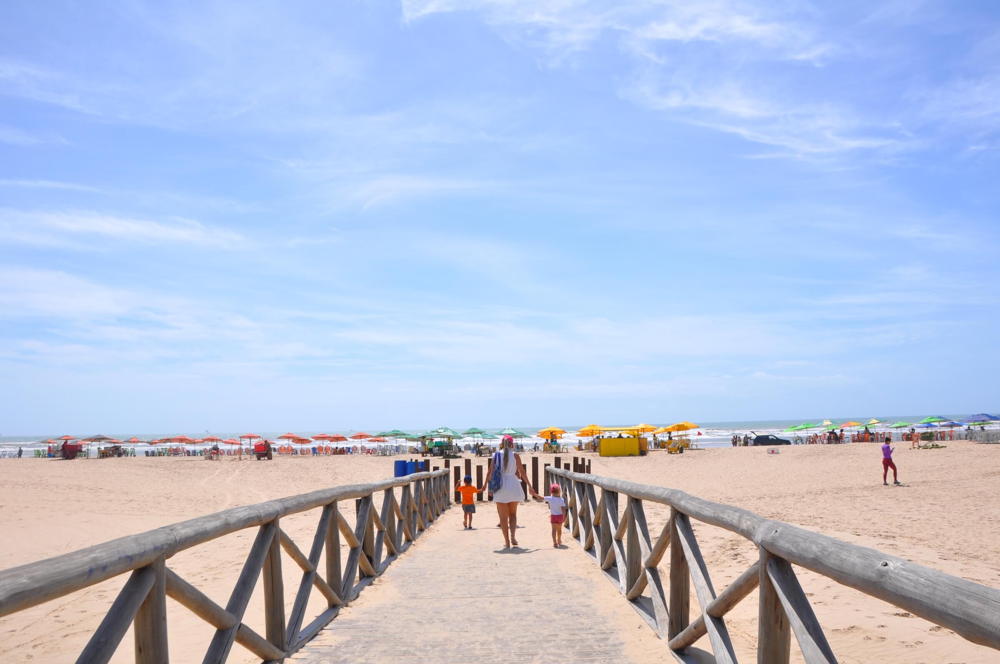
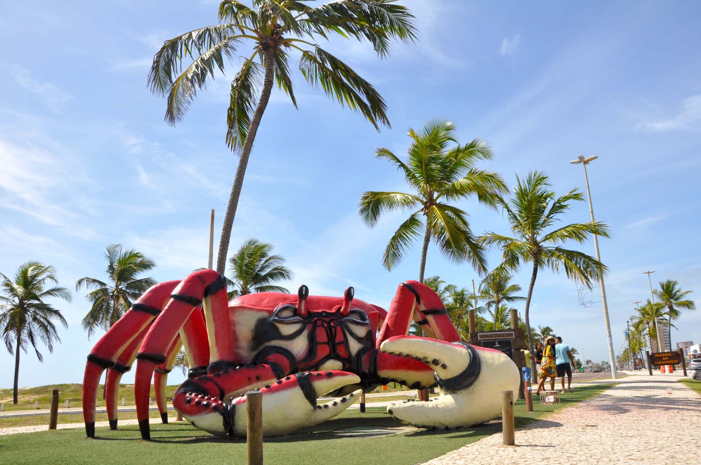

Turismo Sergipano
Conheça os principais destinos turísticos do estado
Aracaju

Aracaju, capital de Sergipe, foi fundada em 1855 e rapidamente se destacou pela sua localização estratégica à beira-mar e
pela tranquilidade que oferece. Sua história está ligada à colonização portuguesa e ao ciclo do açúcar, com forte influência
cultural de africanos e indígenas. Entre os pontos turísticos mais conhecidos, a Orla de Atalaia é um dos mais visitados,
com suas praias e estrutura moderna, ideal para quem busca relaxamento. O Mercado Municipal de Aracaju revela a tradição
local através de artesanato e iguarias regionais. Já o Museu Palácio Marechal, antigo centro político, é essencial para quem se interessa
por história e arquitetura. O Parque Nacional de Santa Maria oferece um contato direto com a natureza,
enquanto a Ilha de Crôa do Goré encanta com suas águas calmas e paisagens paradisíacas. O histórico bairro do Centro, com igrejas e casarões,
também traz um charme único. Visitar Aracaju é mergulhar em uma cidade com tranquilidade, cultura rica e belas praias,
uma combinação perfeita para quem quer explorar o Nordeste com mais calma.
Portanto, não é à toa que tem o caranguejo como um de seus maiores símbolos
Praia de Atalaia

Ela está situada a aproximadamente 10 quilômetros do Centro Histórico da capital sergipana. E, apesar de ser uma praia urbana,
tem água própria para banho, com mar calmo, de boa temperatura e quase sempre limpo.
É sem dúvidas um dos melhores lugares para um mergulho,principalmente na região próxima à Passarela do Caranguejo.
Passarela do Caranguejo

Um dos pontos mais animados da Orla de Atalaia durante a noite, a Passarela do Caranguejo reúne dezenas de bares e restaurantes,
frequentados tanto por turistas como moradores da capital sergipana. Não é exagero dizer que esse é um dos principais polos gastronômicos de Aracaju.
É ali também que está a escultura do mascote da cidade: um caranguejo em proporções gigantes, medindo 7 metros de largura e 2,30 de altura.
A obra é do artesão sergipano Ary Marques Tavares e foi instalada em 2014, tornando-se rapidamente um dos pontos mais fotografados do destino.
Projeto Tamar (Oceanário)

Uma das atividades mais encantadoras da capital sergipana é conhecer o Centro de Visitantes da Fundação Projeto Tamar,
localizada na Orla de Atalaia, a cerca de 500 metros do mar. O também chamado Oceanário de Aracaju abriga mais de 50 espécies
de animais marinhos e de águas doces que compõem a fauna aquática do litoral do estado e do Rio São Francisco.
Nos aquários e tanques, é possível ver de pertinho diversos tipos de peixes, como os tubarões. Mas quem toma a maior parte das atenções são
mesmo as tartarugas. Em um agradável espaço externo, é possível conhecer mais sobre as espécies que ocorrem no Brasil, suas diferenças, ciclos de vida,
as ameaças que enfrentam e também os manejos de proteção e o envolvimento das comunidades costeiras na proteção das tartarugas.